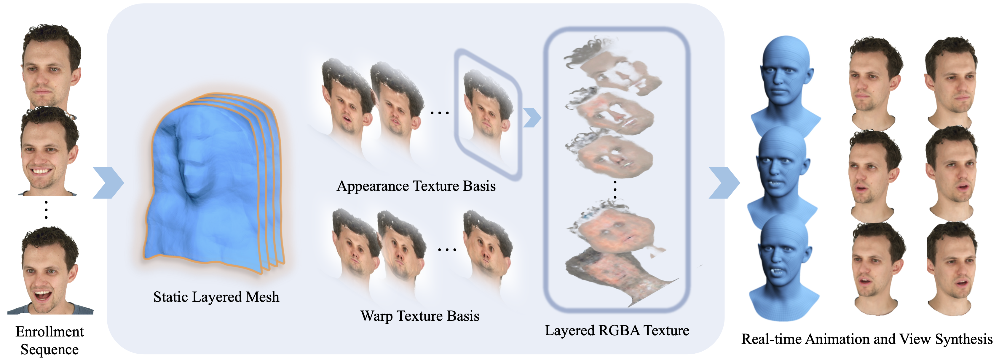

Methodology
From an enrollment sequence of a subject, we learn a layered mesh and blend-textures that model the geometry, appearance and deformations, and a simple linear transformation that maps tracked face model parameters to blend weights. Our representation is readily compatible with existing streaming infrastructure and can be deployed in traditional graphics pipelines in a device- and platform-agnostic way.
